Skin Cancer Classification - An Educational Guide
In this tutorial we aim to provide a simple step-by-step guide to anyone who wants to work on the problem of skin lesion classification regardless of their level or expertise; from medical doctors, to master students and more experienced researchers.
Using this guide you will learn:
- How to load the data, visualise it and uncover more about the class distribution and meta-data.
- How to utilise architectures with varying complexity from a few convolutional layers to hundreds of them.
- How to train a model with appropriate optimisers and loss functions.
- How to rigorously test your trained model, providing not only metrics such as accuracy but also visualisations like confusion matrix and Grad — Cam.
- How to analyse and understand your results.
To conclude with, we will provide a few more tips that are usually utilised by the participants of the ISIC Challenges, that will help you increase your model’s performance even more so that you can beat our performance and explore more advanced training schemes.
https://github.com/IFL-CAMP/SLClassificationAnEducationalCode-MEC2019
# !pip install imageio
# !pip install scikit-image
import torch
from torch import nn
import torch.nn.functional as F
import torchvision
import torchvision.transforms as transforms
import numpy as np
import os
import numpy as np
import pandas as pd
from sklearn.model_selection import train_test_split
from sklearn.metrics import confusion_matrix, precision_recall_fscore_support
import scipy.ndimage
from scipy import misc
from glob import glob
from scipy import stats
from sklearn.preprocessing import LabelEncoder, StandardScaler
import skimage
import imageio
import seaborn as sns
from PIL import Image
import glob
import matplotlib.pyplot as plt
import matplotlib
%matplotlib inline
device = torch.device('cuda' if torch.cuda.is_available() else 'cpu')
device
---------------------------------------------------------------------------
ModuleNotFoundError Traceback (most recent call last)
<ipython-input-3-5b38befe3f1d> in <module>
18 import skimage
19 import imageio
---> 20 import seaborn as sns
21 from PIL import Image
22 import glob
ModuleNotFoundError: No module named 'seaborn'
What about data?
The HAM10000 ("Human Against Machine with 10000 training images") dataset which contains 10,015 dermatoscopic images was made publically available by the Harvard database on June 2018 in the hopes to provide training data for automating the process of skin cancer lesion classifications. The motivation behind this act was to provide the public with an abundance and variability of data source for machine learning training purposes such that the results may be compared with that of human experts. If successful, the appplications would bring cost and time saving regimes to hospitals and medical professions alike.
Apart from the 10,015 images, a metadata file with demographic information of each lesion is provided as well. More than 50% of lesions are confirmed through histopathology (histo), the ground truth for the rest of the cases is either follow-up examination (follow_up), expert consensus (consensus), or confirmation by in-vivo confocal microscopy (confocal)
You can download the dataset here: https://dataverse.harvard.edu/dataset.xhtml?persistentId=doi:10.7910/DVN/DBW86T
The 7 classes of skin cancer lesions included in this dataset are:
- Melanocytic nevi
- Melanoma
- Benign keratosis-like lesions
- Basal cell carcinoma
- Actinic keratoses
- Vascular lesions
- Dermatofibroma
Let's analyze the metadata of the dataset
# importing metadata and checking for its shape
data_dir = "/data/HAM10000"
metadata = pd.read_csv(data_dir + '/HAM10000_metadata.csv')
print(metadata.shape)
# label encoding the seven classes for skin cancers
le = LabelEncoder()
le.fit(metadata['dx'])
LabelEncoder()
print("Classes:", list(le.classes_))
metadata['label'] = le.transform(metadata["dx"])
metadata.sample(10)
---------------------------------------------------------------------------
NameError Traceback (most recent call last)
<ipython-input-2-3d00b7e51bd3> in <module>
2 data_dir = "/data/HAM10000"
3
----> 4 metadata = pd.read_csv(data_dir + '/HAM10000_metadata.csv')
5 print(metadata.shape)
6
NameError: name 'pd' is not defined
# Getting a sense of what the distribution of each column looks like
fig = plt.figure(figsize=(40,25))
ax1 = fig.add_subplot(221)
metadata['dx'].value_counts().plot(kind='bar', ax=ax1)
ax1.set_ylabel('Count', size=50)
ax1.set_title('Cell Type', size = 50)
ax2 = fig.add_subplot(222)
metadata['sex'].value_counts().plot(kind='bar', ax=ax2)
ax2.set_ylabel('Count', size=50)
ax2.set_title('Sex', size=50);
ax3 = fig.add_subplot(223)
metadata['localization'].value_counts().plot(kind='bar')
ax3.set_ylabel('Count', size=50)
ax3.set_title('Localization', size=50)
ax4 = fig.add_subplot(224)
sample_age = metadata[pd.notnull(metadata['age'])]
sns.distplot(sample_age['age'], fit=stats.norm, color='red');
ax4.set_title('Age', size = 50)
ax4.set_xlabel('Year', size=50)
plt.tight_layout()
plt.show()
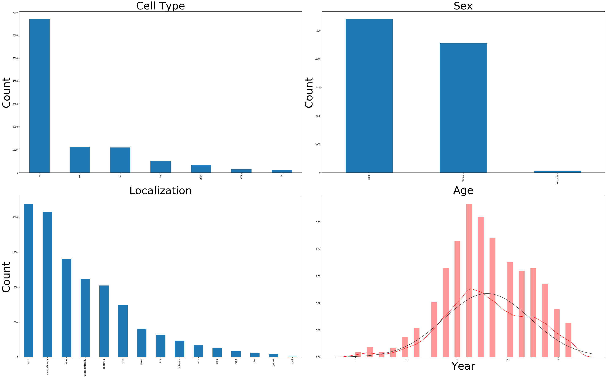
As you can see there is imbalance in the number of images per class. There are much more images for the lesion type "Melanocytic Nevi" compared to other types. This is an usual occurence for medical datasets and so it is very important to analyze the data from beforehand.
Let's visualize some examples
#Visualizing the images
label = [ 'akiec', 'bcc','bkl','df','mel', 'nv', 'vasc']
label_images = []
classes = [ 'actinic keratoses', 'basal cell carcinoma', 'benign keratosis-like lesions',
'dermatofibroma','melanoma', 'melanocytic nevi', 'vascular lesions']
fig = plt.figure(figsize=(55, 55))
k = range(7)
for i in label:
sample = metadata[metadata['dx'] == i]['image_id'][:5]
label_images.extend(sample)
for position,ID in enumerate(label_images):
labl = metadata[metadata['image_id'] == ID]['dx']
im_sample = data_dir + "/" + labl.values[0] + f'/{ID}.jpg'
im_sample = imageio.imread(im_sample)
plt.subplot(7,5,position+1)
plt.imshow(im_sample)
plt.axis('off')
if position%5 == 0:
title = int(position/5)
plt.title(classes[title], loc='left', size=50, weight="bold")
plt.tight_layout()
plt.show()

Median Frequency Balancing
As we saw above that there is class imbalance in our dataset. To solve that we use this method.
#print(metadata['dx'].value_counts())
#print(metadata[metadata['dx']=='nv']['dx'].value_counts())
label = [ 'akiec', 'bcc','bkl','df','mel', 'nv', 'vasc']
def estimate_weights_mfb(label):
class_weights = np.zeros_like(label, dtype=np.float)
counts = np.zeros_like(label)
for i,l in enumerate(label):
counts[i] = metadata[metadata['dx']==str(l)]['dx'].value_counts()[0]
counts = counts.astype(np.float)
#print(counts)
median_freq = np.median(counts)
#print(median_freq)
#print(weights.shape)
for i, label in enumerate(label):
#print(label)
class_weights[i] = median_freq / counts[i]
return class_weights
classweight= estimate_weights_mfb(label)
for i in range(len(label)):
print(label[i],":", classweight[i])
akiec : 1.5718654434250765
bcc : 1.0
bkl : 0.467697907188353
df : 4.469565217391304
mel : 0.4618149146451033
nv : 0.07665920954511558
vasc : 3.619718309859155
Pre-processing the dataset
Before we load the data we need to alter the dataset structure. When you download the dataset, all the images are together in a folder. To use Pytorch dataloader we need to seggregrate the images into folders of their respetive labels. You can use the following script to automate the process.
# import os
# import shutil
# data_dir = os.getcwd() + "/HAM10000/"
# dest_dir = data_dir + "test/"
# metadata = pd.read_csv(data_dir + '/HAM10000_metadata.csv')
# label = ['bkl', 'nv', 'df', 'mel', 'vasc', 'bcc', 'akiec']
# label_images = []
# for i in label:
# os.mkdir(dest_dir + str(i) + "/")
# sample = metadata[metadata['dx'] == i]['image_id'][:5]
# label_images.extend(sample)
# for id in label_images:
# shutil.copyfile((data_dir + i + "/"+ id +".jpg"), (dest_dir + i + "/"+id+".jpg"))
# label_images=[]
Data Augmentation
It is a common fact that medical data is scarce. But to learn a very good model, the network needs a lot of data. So to tackle the problem we perform data augmentation.
First we normalize the images. Data normalization is an important step which ensures that each input parameter (pixel, in this case) has a similar data distribution. This makes convergence faster while training the network. Data normalization is done by subtracting the mean from each pixel and then dividing the result by the standard deviation. The distribution of such data would resemble a Gaussian curve centered at zero. Since, skin lesion images are natural images, we use the normalization values (mean and standard deviation) of Imagenet dataset.
We also perform data augmentation: - Flipping the image horizontally: RandomHorizontalFlip() - Rotating image 60 degrees: RandomRotation() . 60 degrees is chosen as best practice. You can experiment with other angles.
The augmentation is applied using the transform.Compose() function of Pytorch. Take note, we only augment the training set. This is because, augmentation is done to aid the training process. So there is no point in augmenting the test set.
data_dir = "/data/HAM10000"
# normalization values for pretrained resnet on Imagenet
norm_mean = (0.4914, 0.4822, 0.4465)
norm_std = (0.2023, 0.1994, 0.2010)
batch_size = 50
validation_batch_size = 10
test_batch_size = 10
# We compute the weights of individual classes and convert them to tensors
class_weights = estimate_weights_mfb(label)
class_weights = torch.FloatTensor(class_weights)
transform_train = transforms.Compose([
transforms.Resize((224,224)),
transforms.RandomHorizontalFlip(),
transforms.RandomRotation(degrees=60),
transforms.ToTensor(),
transforms.Normalize(norm_mean, norm_std),
])
transform_test = transforms.Compose([
transforms.Resize((224,224)),
transforms.ToTensor(),
transforms.Normalize((0.4914, 0.4822, 0.4465), (0.2023, 0.1994, 0.2010)),
])
Train, Test and Validation Split
We split the entire dataset into 3 parts: - Train: 80% - Test: 20% - Validation: 16%
The splitting is done class wise so that we have equal representation of all classes in each subset of the data.
import torch as th
import math
test_size = 0.2
val_size = 0.2
class Sampler(object):
"""Base class for all Samplers.
"""
def __init__(self, data_source):
pass
def __iter__(self):
raise NotImplementedError
def __len__(self):
raise NotImplementedError
class StratifiedSampler(Sampler):
"""Stratified Sampling
Provides equal representation of target classes
"""
def __init__(self, class_vector):
"""
Arguments
---------
class_vector : torch tensor
a vector of class labels
batch_size : integer
batch_size
"""
self.n_splits = 1
self.class_vector = class_vector
self.test_size = test_size
def gen_sample_array(self):
try:
from sklearn.model_selection import StratifiedShuffleSplit
except:
print('Need scikit-learn for this functionality')
import numpy as np
s = StratifiedShuffleSplit(n_splits=self.n_splits, test_size=self.test_size)
X = th.randn(self.class_vector.size(0),2).numpy()
y = self.class_vector.numpy()
s.get_n_splits(X, y)
train_index, test_index= next(s.split(X, y))
return train_index, test_index
def __iter__(self):
return iter(self.gen_sample_array())
def __len__(self):
return len(self.class_vector)
dataset = torchvision.datasets.ImageFolder(root= data_dir)
data_label = [s[1] for s in dataset.samples]
ss = StratifiedSampler(torch.FloatTensor(data_label), test_size)
pre_train_indices, test_indices = ss.gen_sample_array()
# The "pre" is necessary to use array to identify train/ val indices with indices generated by second sampler
train_label = np.delete(data_label, test_indices, None)
ss = StratifiedSampler(torch.FloatTensor(train_label), test_size)
train_indices, val_indices = ss.gen_sample_array()
indices = {'train': pre_train_indices[train_indices], # Indices of second sampler are used on pre_train_indices
'val': pre_train_indices[val_indices], # Indices of second sampler are used on pre_train_indices
'test': test_indices
}
train_indices = indices['train']
val_indices = indices['val']
test_indices = indices['test']
print("Train Data Size:", len(train_indices))
print("Test Data Size:", len(test_indices))
print("Validation Data Size:", len(val_indices))
Train Data Size: 6409
Test Data Size: 2003
Validation Data Size: 1603
Now we use Pytorch data loader to load the dataset into the memory.
SubsetRandomSampler = torch.utils.data.sampler.SubsetRandomSampler
dataset = torchvision.datasets.ImageFolder(root= data_dir, transform=transform_train)
train_samples = SubsetRandomSampler(train_indices)
val_samples = SubsetRandomSampler(val_indices)
test_samples = SubsetRandomSampler(test_indices)
train_data_loader = torch.utils.data.DataLoader(dataset, batch_size=batch_size, shuffle=False,num_workers=1, sampler= train_samples)
validation_data_loader = torch.utils.data.DataLoader(dataset, batch_size=validation_batch_size, shuffle=False, sampler=val_samples)
dataset = torchvision.datasets.ImageFolder(root= data_dir, transform=transform_test)
test_data_loader = torch.utils.data.DataLoader(dataset, batch_size=test_batch_size, shuffle=False, sampler=test_samples)
Let us see some of the training images.
# functions to show an image
fig = plt.figure(figsize=(10, 15))
def imshow(img):
img = img / 2 + 0.5 # denormalize change this
npimg = img.numpy()
plt.imshow(np.transpose(npimg, (1, 2, 0)))
# get some random training images
dataiter = iter(train_data_loader)
images, labels = dataiter.next()
# show images
imshow(torchvision.utils.make_grid(images))
# print labels
print(' '.join('%5s, ' % classes[labels[j]] for j in range(len(labels))))
Clipping input data to the valid range for imshow with RGB data ([0..1] for floats or [0..255] for integers).
melanocytic nevi, actinic keratoses, benign keratosis-like lesions, benign keratosis-like lesions, melanocytic nevi, melanocytic nevi, basal cell carcinoma, melanocytic nevi, melanocytic nevi, benign keratosis-like lesions, melanocytic nevi, melanocytic nevi, melanocytic nevi, melanocytic nevi, melanocytic nevi, melanocytic nevi, melanocytic nevi, melanocytic nevi, melanocytic nevi, melanocytic nevi, benign keratosis-like lesions, melanocytic nevi, melanoma, melanocytic nevi, melanocytic nevi, melanoma, melanoma, melanocytic nevi, actinic keratoses, melanocytic nevi, actinic keratoses, melanocytic nevi, melanocytic nevi, melanoma, melanocytic nevi, melanoma, melanoma, melanocytic nevi, melanoma, melanocytic nevi, melanocytic nevi, melanocytic nevi, melanocytic nevi, melanoma, melanocytic nevi, melanocytic nevi, melanocytic nevi, dermatofibroma, basal cell carcinoma, basal cell carcinoma,
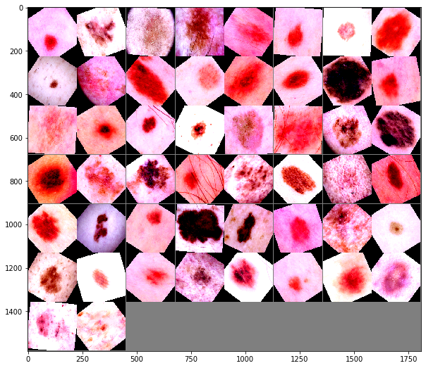
Define a Convolutional Neural Network
Pytorch makes it very easy to define a neural network. We have layers like Convolutions, ReLU non-linearity, Maxpooling etc. directly from torch library.
In this tutorial, we use The LeNet architecture introduced by LeCun et al. in their 1998 paper, Gradient-Based Learning Applied to Document Recognition. As the name of the paper suggests, the authors’ implementation of LeNet was used primarily for OCR and character recognition in documents.
The LeNet architecture is straightforward and small, (in terms of memory footprint), making it perfect for teaching the basics of CNNs.
num_classes = len(classes)
class LeNet(nn.Module):
def __init__(self):
super(LeNet, self).__init__()
self.conv1 = nn.Conv2d(3, 6, (5,5), padding=2)
self.conv2 = nn.Conv2d(6, 16, (5,5))
self.fc1 = nn.Linear(16*54*54, 120)
self.fc2 = nn.Linear(120, 84)
self.fc3 = nn.Linear(84, num_classes)
def forward(self, x):
x = F.max_pool2d(F.relu(self.conv1(x)), (2,2))
x = F.max_pool2d(F.relu(self.conv2(x)), (2,2))
x = x.view(-1, self.num_flat_features(x))
x = F.relu(self.fc1(x))
x = F.relu(self.fc2(x))
x = self.fc3(x)
return x
def num_flat_features(self, x):
size = x.size()[1:]
num_features = 1
for s in size:
num_features *= s
return num_features
net = LeNet()
net = net.to(device)
Define a Loss function and Optimizer
Let's use a Classification Cross-Entropy loss.
\(H_{y'} (y) := - \sum_{i} y_{i}' \log (y_i)\)
The most common and effective Optimizer currently used is Adam: Adaptive Moments. You can look here for more information.
import torch.optim as optim
class_weights = class_weights.to(device)
criterion = nn.CrossEntropyLoss(weight = class_weights)
optimizer = optim.Adam(net.parameters(), lr=1e-5)
print(net)
LeNet(
(conv1): Conv2d(3, 6, kernel_size=(5, 5), stride=(1, 1), padding=(2, 2))
(conv2): Conv2d(6, 16, kernel_size=(5, 5), stride=(1, 1))
(fc1): Linear(in_features=46656, out_features=120, bias=True)
(fc2): Linear(in_features=120, out_features=84, bias=True)
(fc3): Linear(in_features=84, out_features=7, bias=True)
)
These are some helper functions to evaluate the training process.
from sklearn.metrics import accuracy_score
def get_accuracy(predicted, labels):
batch_len, correct= 0, 0
batch_len = labels.size(0)
correct = (predicted == labels).sum().item()
return batch_len, correct
def evaluate(model, val_loader):
losses= 0
num_samples_total=0
correct_total=0
model.eval()
for inputs, labels in val_loader:
inputs, labels = inputs.to(device), labels.to(device)
out = model(inputs)
_, predicted = torch.max(out, 1)
loss = criterion(out, labels)
losses += loss.item()
b_len, corr = get_accuracy(predicted, labels)
num_samples_total +=b_len
correct_total +=corr
accuracy = correct_total/num_samples_total
losses = losses/len(val_loader)
return losses, accuracy
Train the network
This is when things start to get interesting. We simply loop over the training data iterator, and feed the inputs to the network and optimize.
# number of loops over the dataset
num_epochs = 50
accuracy = []
val_accuracy = []
losses = []
val_losses = []
for epoch in range(num_epochs):
running_loss = 0.0
correct_total= 0.0
num_samples_total=0.0
for i, data in enumerate(train_data_loader):
# get the inputs
inputs, labels = data
inputs, labels = inputs.to(device), labels.to(device)
# set the parameter gradients to zero
optimizer.zero_grad()
# forward + backward + optimize
outputs = net(inputs)
loss = criterion(outputs, labels)
loss.backward()
optimizer.step()
#compute accuracy
_, predicted = torch.max(outputs, 1)
b_len, corr = get_accuracy(predicted, labels)
num_samples_total +=b_len
correct_total +=corr
running_loss += loss.item()
running_loss /= len(train_data_loader)
train_accuracy = correct_total/num_samples_total
val_loss, val_acc = evaluate(net, validation_data_loader)
print('Epoch: %d' %(epoch+1))
print('Loss: %.3f Accuracy:%.3f' %(running_loss, train_accuracy))
print('Validation Loss: %.3f Val Accuracy: %.3f' %(val_loss, val_acc))
losses.append(running_loss)
val_losses.append(val_loss)
accuracy.append(train_accuracy)
val_accuracy.append(val_acc)
print('Finished Training')
Epoch: 1
Loss: 1.806 Accuracy:0.314
Validation Loss: 1.727 Val Accuracy: 0.403
Epoch: 2
Loss: 1.663 Accuracy:0.371
Validation Loss: 1.631 Val Accuracy: 0.419
Epoch: 3
Loss: 1.589 Accuracy:0.459
Validation Loss: 1.565 Val Accuracy: 0.451
Epoch: 4
Loss: 1.542 Accuracy:0.486
Validation Loss: 1.558 Val Accuracy: 0.431
Epoch: 5
Loss: 1.499 Accuracy:0.494
Validation Loss: 1.483 Val Accuracy: 0.500
Epoch: 6
Loss: 1.472 Accuracy:0.500
Validation Loss: 1.457 Val Accuracy: 0.525
Epoch: 7
Loss: 1.447 Accuracy:0.509
Validation Loss: 1.454 Val Accuracy: 0.498
Epoch: 9
Loss: 1.421 Accuracy:0.503
Validation Loss: 1.406 Val Accuracy: 0.527
Epoch: 10
Loss: 1.399 Accuracy:0.516
Validation Loss: 1.413 Val Accuracy: 0.530
Epoch: 11
Loss: 1.390 Accuracy:0.519
Validation Loss: 1.436 Val Accuracy: 0.496
Epoch: 12
Loss: 1.384 Accuracy:0.519
Validation Loss: 1.396 Val Accuracy: 0.505
Epoch: 13
Loss: 1.373 Accuracy:0.529
Validation Loss: 1.391 Val Accuracy: 0.525
Epoch: 14
Loss: 1.363 Accuracy:0.534
Validation Loss: 1.376 Val Accuracy: 0.518
Epoch: 15
Loss: 1.364 Accuracy:0.531
Validation Loss: 1.365 Val Accuracy: 0.536
Epoch: 16
Loss: 1.352 Accuracy:0.534
Validation Loss: 1.363 Val Accuracy: 0.548
Epoch: 17
Loss: 1.337 Accuracy:0.536
Validation Loss: 1.365 Val Accuracy: 0.532
Epoch: 18
Loss: 1.333 Accuracy:0.540
Validation Loss: 1.340 Val Accuracy: 0.527
Epoch: 19
Loss: 1.327 Accuracy:0.542
Validation Loss: 1.333 Val Accuracy: 0.530
Epoch: 20
Loss: 1.320 Accuracy:0.537
Validation Loss: 1.304 Val Accuracy: 0.558
Epoch: 21
Loss: 1.303 Accuracy:0.555
Validation Loss: 1.373 Val Accuracy: 0.490
Epoch: 23
Loss: 1.293 Accuracy:0.550
Validation Loss: 1.348 Val Accuracy: 0.530
Epoch: 24
Loss: 1.308 Accuracy:0.554
Validation Loss: 1.344 Val Accuracy: 0.558
Epoch: 25
Loss: 1.288 Accuracy:0.559
Validation Loss: 1.329 Val Accuracy: 0.552
Epoch: 26
Loss: 1.288 Accuracy:0.558
Validation Loss: 1.321 Val Accuracy: 0.533
Epoch: 27
Loss: 1.295 Accuracy:0.560
Validation Loss: 1.310 Val Accuracy: 0.558
Epoch: 28
Loss: 1.290 Accuracy:0.562
Validation Loss: 1.303 Val Accuracy: 0.534
Epoch: 29
Loss: 1.278 Accuracy:0.560
Validation Loss: 1.315 Val Accuracy: 0.522
Epoch: 30
Loss: 1.280 Accuracy:0.559
Validation Loss: 1.318 Val Accuracy: 0.540
Epoch: 31
Loss: 1.266 Accuracy:0.561
Validation Loss: 1.284 Val Accuracy: 0.540
Epoch: 32
Loss: 1.275 Accuracy:0.565
Validation Loss: 1.289 Val Accuracy: 0.562
Epoch: 33
Loss: 1.259 Accuracy:0.575
Validation Loss: 1.284 Val Accuracy: 0.585
Epoch: 34
Loss: 1.268 Accuracy:0.561
Validation Loss: 1.313 Val Accuracy: 0.530
Epoch: 35
Loss: 1.257 Accuracy:0.574
Validation Loss: 1.328 Val Accuracy: 0.520
Epoch: 36
Loss: 1.254 Accuracy:0.569
Validation Loss: 1.288 Val Accuracy: 0.555
Epoch: 37
Loss: 1.259 Accuracy:0.574
Validation Loss: 1.289 Val Accuracy: 0.566
Epoch: 38
Loss: 1.251 Accuracy:0.576
Validation Loss: 1.319 Val Accuracy: 0.513
Epoch: 39
Loss: 1.248 Accuracy:0.572
Validation Loss: 1.276 Val Accuracy: 0.571
Epoch: 40
Loss: 1.253 Accuracy:0.582
Validation Loss: 1.300 Val Accuracy: 0.533
Epoch: 41
Loss: 1.236 Accuracy:0.570
Validation Loss: 1.288 Val Accuracy: 0.563
Epoch: 42
Loss: 1.246 Accuracy:0.572
Validation Loss: 1.263 Val Accuracy: 0.564
Epoch: 43
Loss: 1.240 Accuracy:0.581
Validation Loss: 1.332 Val Accuracy: 0.520
Epoch: 44
Loss: 1.253 Accuracy:0.573
Validation Loss: 1.311 Val Accuracy: 0.528
Epoch: 45
Loss: 1.229 Accuracy:0.579
Validation Loss: 1.266 Val Accuracy: 0.558
Epoch: 46
Loss: 1.221 Accuracy:0.585
Validation Loss: 1.264 Val Accuracy: 0.553
Epoch: 47
Loss: 1.232 Accuracy:0.586
Validation Loss: 1.258 Val Accuracy: 0.561
Epoch: 48
Loss: 1.236 Accuracy:0.582
Validation Loss: 1.255 Val Accuracy: 0.588
Epoch: 49
Loss: 1.224 Accuracy:0.583
Validation Loss: 1.258 Val Accuracy: 0.581
Epoch: 50
Loss: 1.234 Accuracy:0.582
Validation Loss: 1.261 Val Accuracy: 0.560
Finished Training
Plot the training and validation loss curves.
# plt.plot(losses)
# plt.show()
epoch = range(1, num_epochs+1)
fig = plt.figure(figsize=(10, 15))
plt.subplot(2,1,2)
plt.plot(epoch, losses, label='Training loss')
plt.plot(epoch, val_losses, label='Validation loss')
plt.title('Training and Validation Loss')
plt.xlabel('Epochs')
plt.legend()
plt.figure()
plt.show()
fig = plt.figure(figsize=(10, 15))
plt.subplot(2,1,2)
plt.plot(epoch, accuracy, label='Training accuracy')
plt.plot(epoch, val_accuracy, label='Validation accuracy')
plt.title('Training and Validation Accuracy')
plt.xlabel('Epochs')
plt.legend()
plt.figure()
plt.show()
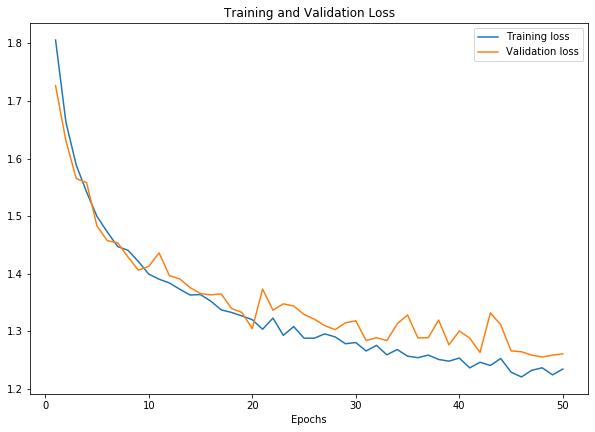
<Figure size 432x288 with 0 Axes>
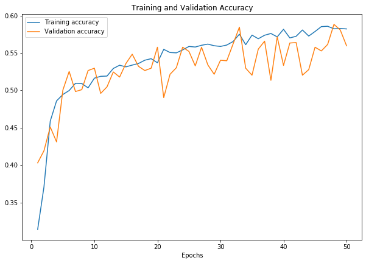
<Figure size 432x288 with 0 Axes>
Test the network on the test data
We have trained the network over the training dataset. But we need to check if the network has learnt anything at all.
We will check this by predicting the class label that the neural network outputs, and checking it against the ground-truth. If the prediction is correct, we add the sample to the list of correct predictions.
Okay, first step. Let us display an image from the test set to get familiar.
fig = plt.figure(figsize=(10, 15))
dataiter = iter(test_data_loader)
images, labels = dataiter.next()
# print images
imshow(torchvision.utils.make_grid(images))
print('GroundTruth: ', ' '.join('%5s, ' % classes[labels[j]] for j in range(len(labels))))
Clipping input data to the valid range for imshow with RGB data ([0..1] for floats or [0..255] for integers).
GroundTruth: melanocytic nevi, benign keratosis-like lesions, melanocytic nevi, melanoma, melanocytic nevi, benign keratosis-like lesions, melanocytic nevi, melanoma, benign keratosis-like lesions, melanocytic nevi,
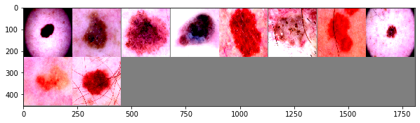
Okay, now let us check the performance on the test network:
correct = 0
total = 0
net.eval()
with torch.no_grad():
for data in test_data_loader:
images, labels = data
images, labels = images.to(device), labels.to(device)
outputs = net(images)
_, predicted = torch.max(outputs.data, 1)
total += labels.size(0)
correct += (predicted == labels).sum().item()
print('Accuracy of the network on the test images: %d %%' % (
100 * correct / total))
Accuracy of the network on the test images: 52 %
That looks better than chance, which is about 14% accuracy (randomly picking a class out of 7 classes). Seems like the network learnt something. But maybe it doesn't learn all the classes equally.
Let's check which classes that performed well, and which did not.
class_correct = list(0. for i in range(len(classes)))
class_total = list(1e-7 for i in range(len(classes)))
with torch.no_grad():
for data in test_data_loader:
images, labels = data
images, labels = images.to(device), labels.to(device)
outputs = net(images)
_, predicted = torch.max(outputs, 1)
c = (predicted == labels).squeeze()
for i in range(3):
label = labels[i]
class_correct[label] += c[i].item()
class_total[label] += 1
for i in range(len(classes)):
print('Accuracy of %5s : %2d %%' % (
classes[i], 100 * class_correct[i] / class_total[i]))
Accuracy of actinic keratoses : 27 %
Accuracy of basal cell carcinoma : 76 %
Accuracy of benign keratosis-like lesions : 4 %
Accuracy of dermatofibroma : 39 %
Accuracy of melanoma : 73 %
Accuracy of melanocytic nevi : 58 %
Accuracy of vascular lesions : 0 %
Confusion Matrix
confusion_matrix = torch.zeros(len(classes), len(classes))
with torch.no_grad():
for data in test_data_loader:
images, labels = data
images, labels = images.to(device), labels.to(device)
outputs = net(images)
_, predicted = torch.max(outputs, 1)
for t, p in zip(labels.view(-1), predicted.view(-1)):
confusion_matrix[t.long(), p.long()] += 1
cm = confusion_matrix.numpy()
fig,ax= plt.subplots(figsize=(7,7))
sns.heatmap(cm / (cm.astype(np.float).sum(axis=1) + 1e-9), annot=False, ax=ax)
# labels, title and ticks
ax.set_xlabel('Predicted', size=25);
ax.set_ylabel('True', size=25);
ax.set_title('Confusion Matrix', size=25);
ax.xaxis.set_ticklabels(['akiec','bcc','bkl','df', 'mel', 'nv','vasc'], size=15); \
ax.yaxis.set_ticklabels(['akiec','bcc','bkl','df','mel','nv','vasc'], size=15);
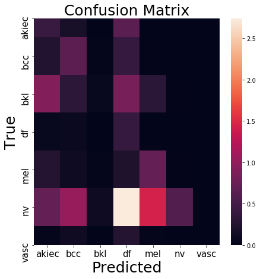
Grad cam
from collections import OrderedDict, Sequence
class _BaseWrapper(object):
"""
Please modify forward() and backward() according to your task.
"""
def __init__(self, model):
super(_BaseWrapper, self).__init__()
self.device = next(model.parameters()).device
self.model = model
self.handlers = [] # a set of hook function handlers
def _encode_one_hot(self, ids):
one_hot = torch.zeros_like(self.logits).to(self.device)
one_hot.scatter_(1, ids, 1.0)
return one_hot
def forward(self, image):
"""
Simple classification
"""
self.model.zero_grad()
self.logits = self.model(image)
self.probs = F.softmax(self.logits, dim=1)
return self.probs.sort(dim=1, descending=True)
def backward(self, ids):
"""
Class-specific backpropagation
Either way works:
1. self.logits.backward(gradient=one_hot, retain_graph=True)
2. (self.logits * one_hot).sum().backward(retain_graph=True)
"""
one_hot = self._encode_one_hot(ids)
self.logits.backward(gradient=one_hot, retain_graph=True)
def generate(self):
raise NotImplementedError
def remove_hook(self):
"""
Remove all the forward/backward hook functions
"""
for handle in self.handlers:
handle.remove()
class GradCAM(_BaseWrapper):
"""
"Grad-CAM: Visual Explanations from Deep Networks via Gradient-based Localization"
https://arxiv.org/pdf/1610.02391.pdf
Look at Figure 2 on page 4
"""
def __init__(self, model, candidate_layers=None):
super(GradCAM, self).__init__(model)
self.fmap_pool = OrderedDict()
self.grad_pool = OrderedDict()
self.candidate_layers = candidate_layers # list
def forward_hook(key):
def forward_hook_(module, input, output):
# Save featuremaps
self.fmap_pool[key] = output.detach()
return forward_hook_
def backward_hook(key):
def backward_hook_(module, grad_in, grad_out):
# Save the gradients correspond to the featuremaps
self.grad_pool[key] = grad_out[0].detach()
return backward_hook_
# If any candidates are not specified, the hook is registered to all the layers.
for name, module in self.model.named_modules():
if self.candidate_layers is None or name in self.candidate_layers:
self.handlers.append(module.register_forward_hook(forward_hook(name)))
self.handlers.append(module.register_backward_hook(backward_hook(name)))
def _find(self, pool, target_layer):
if target_layer in pool.keys():
return pool[target_layer]
else:
raise ValueError("Invalid layer name: {}".format(target_layer))
def _compute_grad_weights(self, grads):
return F.adaptive_avg_pool2d(grads, 1)
def forward(self, image):
self.image_shape = image.shape[2:]
return super(GradCAM, self).forward(image)
def generate(self, target_layer):
fmaps = self._find(self.fmap_pool, target_layer)
grads = self._find(self.grad_pool, target_layer)
weights = self._compute_grad_weights(grads)
gcam = torch.mul(fmaps, weights).sum(dim=1, keepdim=True)
gcam = F.relu(gcam)
gcam = F.interpolate(
gcam, self.image_shape, mode="bilinear", align_corners=False
)
B, C, H, W = gcam.shape
gcam = gcam.view(B, -1)
gcam -= gcam.min(dim=1, keepdim=True)[0]
gcam /= gcam.max(dim=1, keepdim=True)[0]
gcam = gcam.view(B, C, H, W)
return gcam
def demo2(image, label, model):
"""
Generate Grad-CAM
"""
# Model
model = model
model.to(device)
model.eval()
# The layers
target_layers = ["conv2"]
target_class = label
# Images
images = image.unsqueeze(0)
gcam = GradCAM(model=model)
probs, ids = gcam.forward(images)
ids_ = torch.LongTensor([[target_class]] * len(images)).to(device)
gcam.backward(ids=ids_)
for target_layer in target_layers:
print("Generating Grad-CAM @{}".format(target_layer))
# Grad-CAM
regions = gcam.generate(target_layer=target_layer)
for j in range(len(images)):
print(
"\t#{}: {} ({:.5f})".format(
j, classes[target_class], float(probs[ids == target_class])
)
)
gcam=regions[j, 0]
plt.imshow(gcam.cpu())
plt.show()
image, label = next(iter(test_data_loader))
# Load the model
model = net
# Grad cam
demo2(image[0].to(device), label[0].to(device), model)
image = np.transpose(image[0], (1,2,0))
image2 = np.add(np.multiply(image.numpy(), np.array(norm_std)) ,np.array(norm_mean))
print("True Class: ", classes[label[0].cpu()])
plt.imshow(image)
plt.show()
plt.imshow(image2)
plt.show()
Generating Grad-CAM @conv2
#0: melanocytic nevi (0.12183)
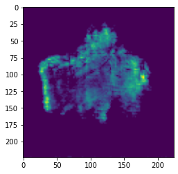
Clipping input data to the valid range for imshow with RGB data ([0..1] for floats or [0..255] for integers).
True Class: melanocytic nevi
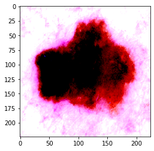
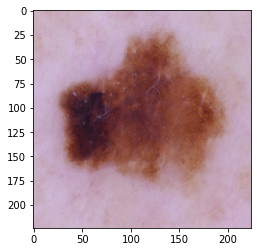
Analysis of the results
As we can see from the results of the LeNet model, our system is not capable of processing the complexity of the given input images. Our final accuracy on the test data was 61%. About 39% of the images are missclassified, which is a terrible performance for any clinical use case.
These results could be substantially improved if we opt for a deeper, more complex network architecture than LeNet, which will allow for a richer learning of the corresponding image features.
Switching to superior network architecture:Resnet18
from torch import nn
num_classes = len(classes)
net = torchvision.models.resnet18(pretrained = True)
# We replace last layer of resnet to match our number of classes which is 7
net.fc = nn.Linear(512, num_classes)
net = net.to(device)
- Define a Loss function and Optimizer
Let's use a Classification Cross-Entropy loss.
\(H_{y'} (y) := - \sum_{i} y_{i}' \log (y_i)\)
The most common and effective Optimizer currently used is Adam: Adaptive Moments. You can look here for more information.
import torch.optim as optim
class_weights = class_weights.to(device)
criterion = nn.CrossEntropyLoss(weight = class_weights)
optimizer = optim.Adam(net.parameters(), lr=1e-5)
print(net)
ResNet(
(conv1): Conv2d(3, 64, kernel_size=(7, 7), stride=(2, 2), padding=(3, 3), bias=False)
(bn1): BatchNorm2d(64, eps=1e-05, momentum=0.1, affine=True, track_running_stats=True)
(relu): ReLU(inplace=True)
(maxpool): MaxPool2d(kernel_size=3, stride=2, padding=1, dilation=1, ceil_mode=False)
(layer1): Sequential(
(0): BasicBlock(
(conv1): Conv2d(64, 64, kernel_size=(3, 3), stride=(1, 1), padding=(1, 1), bias=False)
(bn1): BatchNorm2d(64, eps=1e-05, momentum=0.1, affine=True, track_running_stats=True)
(relu): ReLU(inplace=True)
(conv2): Conv2d(64, 64, kernel_size=(3, 3), stride=(1, 1), padding=(1, 1), bias=False)
(bn2): BatchNorm2d(64, eps=1e-05, momentum=0.1, affine=True, track_running_stats=True)
)
(1): BasicBlock(
(conv1): Conv2d(64, 64, kernel_size=(3, 3), stride=(1, 1), padding=(1, 1), bias=False)
(bn1): BatchNorm2d(64, eps=1e-05, momentum=0.1, affine=True, track_running_stats=True)
(relu): ReLU(inplace=True)
(conv2): Conv2d(64, 64, kernel_size=(3, 3), stride=(1, 1), padding=(1, 1), bias=False)
(bn2): BatchNorm2d(64, eps=1e-05, momentum=0.1, affine=True, track_running_stats=True)
)
)
(layer2): Sequential(
(0): BasicBlock(
(conv1): Conv2d(64, 128, kernel_size=(3, 3), stride=(2, 2), padding=(1, 1), bias=False)
(bn1): BatchNorm2d(128, eps=1e-05, momentum=0.1, affine=True, track_running_stats=True)
(relu): ReLU(inplace=True)
(conv2): Conv2d(128, 128, kernel_size=(3, 3), stride=(1, 1), padding=(1, 1), bias=False)
(bn2): BatchNorm2d(128, eps=1e-05, momentum=0.1, affine=True, track_running_stats=True)
(downsample): Sequential(
(0): Conv2d(64, 128, kernel_size=(1, 1), stride=(2, 2), bias=False)
(1): BatchNorm2d(128, eps=1e-05, momentum=0.1, affine=True, track_running_stats=True)
)
)
(1): BasicBlock(
(conv1): Conv2d(128, 128, kernel_size=(3, 3), stride=(1, 1), padding=(1, 1), bias=False)
(bn1): BatchNorm2d(128, eps=1e-05, momentum=0.1, affine=True, track_running_stats=True)
(relu): ReLU(inplace=True)
(conv2): Conv2d(128, 128, kernel_size=(3, 3), stride=(1, 1), padding=(1, 1), bias=False)
(bn2): BatchNorm2d(128, eps=1e-05, momentum=0.1, affine=True, track_running_stats=True)
)
)
(layer3): Sequential(
(0): BasicBlock(
(conv1): Conv2d(128, 256, kernel_size=(3, 3), stride=(2, 2), padding=(1, 1), bias=False)
(bn1): BatchNorm2d(256, eps=1e-05, momentum=0.1, affine=True, track_running_stats=True)
(relu): ReLU(inplace=True)
(conv2): Conv2d(256, 256, kernel_size=(3, 3), stride=(1, 1), padding=(1, 1), bias=False)
(bn2): BatchNorm2d(256, eps=1e-05, momentum=0.1, affine=True, track_running_stats=True)
(downsample): Sequential(
(0): Conv2d(128, 256, kernel_size=(1, 1), stride=(2, 2), bias=False)
(1): BatchNorm2d(256, eps=1e-05, momentum=0.1, affine=True, track_running_stats=True)
)
)
(1): BasicBlock(
(conv1): Conv2d(256, 256, kernel_size=(3, 3), stride=(1, 1), padding=(1, 1), bias=False)
(bn1): BatchNorm2d(256, eps=1e-05, momentum=0.1, affine=True, track_running_stats=True)
(relu): ReLU(inplace=True)
(conv2): Conv2d(256, 256, kernel_size=(3, 3), stride=(1, 1), padding=(1, 1), bias=False)
(bn2): BatchNorm2d(256, eps=1e-05, momentum=0.1, affine=True, track_running_stats=True)
)
)
(layer4): Sequential(
(0): BasicBlock(
(conv1): Conv2d(256, 512, kernel_size=(3, 3), stride=(2, 2), padding=(1, 1), bias=False)
(bn1): BatchNorm2d(512, eps=1e-05, momentum=0.1, affine=True, track_running_stats=True)
(relu): ReLU(inplace=True)
(conv2): Conv2d(512, 512, kernel_size=(3, 3), stride=(1, 1), padding=(1, 1), bias=False)
(bn2): BatchNorm2d(512, eps=1e-05, momentum=0.1, affine=True, track_running_stats=True)
(downsample): Sequential(
(0): Conv2d(256, 512, kernel_size=(1, 1), stride=(2, 2), bias=False)
(1): BatchNorm2d(512, eps=1e-05, momentum=0.1, affine=True, track_running_stats=True)
)
)
(1): BasicBlock(
(conv1): Conv2d(512, 512, kernel_size=(3, 3), stride=(1, 1), padding=(1, 1), bias=False)
(bn1): BatchNorm2d(512, eps=1e-05, momentum=0.1, affine=True, track_running_stats=True)
(relu): ReLU(inplace=True)
(conv2): Conv2d(512, 512, kernel_size=(3, 3), stride=(1, 1), padding=(1, 1), bias=False)
(bn2): BatchNorm2d(512, eps=1e-05, momentum=0.1, affine=True, track_running_stats=True)
)
)
(avgpool): AdaptiveAvgPool2d(output_size=(1, 1))
(fc): Linear(in_features=512, out_features=7, bias=True)
)
These are some helper functions to evaluate the training process.
from sklearn.metrics import accuracy_score
def get_accuracy(predicted, labels):
batch_len, correct= 0, 0
batch_len = labels.size(0)
correct = (predicted == labels).sum().item()
return batch_len, correct
def evaluate(model, val_loader):
losses= 0
num_samples_total=0
correct_total=0
model.eval()
for inputs, labels in val_loader:
inputs, labels = inputs.to(device), labels.to(device)
out = model(inputs)
_, predicted = torch.max(out, 1)
loss = criterion(out, labels)
losses += loss.item()
b_len, corr = get_accuracy(predicted, labels)
num_samples_total +=b_len
correct_total +=corr
accuracy = correct_total/num_samples_total
losses = losses/len(val_loader)
return losses, accuracy
Train the network
This is when things start to get interesting. We simply loop over the training data iterator, and feed the inputs to the network and optimize.
# number of loops over the dataset
num_epochs = 70
accuracy = []
val_accuracy = []
losses = []
val_losses = []
for epoch in range(num_epochs):
running_loss = 0.0
correct_total= 0.0
num_samples_total=0.0
for i, data in enumerate(train_data_loader):
# get the inputs
inputs, labels = data
inputs, labels = inputs.to(device), labels.to(device)
# set the parameter gradients to zero
optimizer.zero_grad()
# forward + backward + optimize
outputs = net(inputs)
loss = criterion(outputs, labels)
loss.backward()
optimizer.step()
#compute accuracy
_, predicted = torch.max(outputs, 1)
b_len, corr = get_accuracy(predicted, labels)
num_samples_total +=b_len
correct_total +=corr
running_loss += loss.item()
running_loss /= len(train_data_loader)
train_accuracy = correct_total/num_samples_total
val_loss, val_acc = evaluate(net, validation_data_loader)
print('Epoch: %d' %(epoch+1))
print('Loss: %.3f Accuracy:%.3f' %(running_loss, train_accuracy))
print('Validation Loss: %.3f Val Accuracy: %.3f' %(val_loss, val_acc))
losses.append(running_loss)
val_losses.append(val_loss)
accuracy.append(train_accuracy)
val_accuracy.append(val_acc)
print('Finished Training')
Epoch: 1
Loss: 1.918 Accuracy:0.098
Validation Loss: 1.588 Val Accuracy: 0.243
Epoch: 2
Loss: 1.125 Accuracy:0.621
Validation Loss: 1.040 Val Accuracy: 0.648
Epoch: 3
Loss: 0.937 Accuracy:0.678
Validation Loss: 0.892 Val Accuracy: 0.674
Epoch: 5
Loss: 0.759 Accuracy:0.724
Validation Loss: 0.929 Val Accuracy: 0.651
Epoch: 6
Loss: 0.690 Accuracy:0.730
Validation Loss: 0.838 Val Accuracy: 0.718
Epoch: 7
Loss: 0.662 Accuracy:0.737
Validation Loss: 0.816 Val Accuracy: 0.709
Epoch: 8
Loss: 0.590 Accuracy:0.763
Validation Loss: 0.819 Val Accuracy: 0.705
Epoch: 9
Loss: 0.564 Accuracy:0.767
Validation Loss: 0.848 Val Accuracy: 0.726
Epoch: 10
Loss: 0.546 Accuracy:0.770
Validation Loss: 0.851 Val Accuracy: 0.719
Epoch: 11
Loss: 0.499 Accuracy:0.778
Validation Loss: 0.766 Val Accuracy: 0.749
Epoch: 12
Loss: 0.499 Accuracy:0.784
Validation Loss: 0.734 Val Accuracy: 0.751
Epoch: 13
Loss: 0.462 Accuracy:0.801
Validation Loss: 0.802 Val Accuracy: 0.757
Epoch: 14
Loss: 0.454 Accuracy:0.805
Validation Loss: 0.757 Val Accuracy: 0.744
Epoch: 15
Loss: 0.414 Accuracy:0.808
Validation Loss: 0.722 Val Accuracy: 0.769
Epoch: 16
Loss: 0.433 Accuracy:0.802
Validation Loss: 0.829 Val Accuracy: 0.787
Epoch: 17
Loss: 0.399 Accuracy:0.813
Validation Loss: 0.791 Val Accuracy: 0.768
Epoch: 18
Loss: 0.372 Accuracy:0.825
Validation Loss: 0.660 Val Accuracy: 0.791
Epoch: 19
Loss: 0.354 Accuracy:0.822
Validation Loss: 0.794 Val Accuracy: 0.784
Epoch: 20
Loss: 0.355 Accuracy:0.829
Validation Loss: 0.789 Val Accuracy: 0.750
Epoch: 21
Loss: 0.318 Accuracy:0.841
Validation Loss: 0.765 Val Accuracy: 0.800
Epoch: 22
Loss: 0.284 Accuracy:0.855
Validation Loss: 0.801 Val Accuracy: 0.777
Epoch: 23
Loss: 0.311 Accuracy:0.839
Validation Loss: 0.849 Val Accuracy: 0.815
Epoch: 24
Loss: 0.277 Accuracy:0.851
Validation Loss: 0.839 Val Accuracy: 0.792
Epoch: 25
Loss: 0.284 Accuracy:0.852
Validation Loss: 0.772 Val Accuracy: 0.770
Epoch: 26
Loss: 0.261 Accuracy:0.863
Validation Loss: 0.770 Val Accuracy: 0.802
Epoch: 27
Loss: 0.244 Accuracy:0.863
Validation Loss: 0.782 Val Accuracy: 0.782
Epoch: 28
Loss: 0.239 Accuracy:0.862
Validation Loss: 0.731 Val Accuracy: 0.805
Epoch: 29
Loss: 0.234 Accuracy:0.870
Validation Loss: 0.786 Val Accuracy: 0.816
Epoch: 30
Loss: 0.248 Accuracy:0.860
Validation Loss: 0.739 Val Accuracy: 0.803
Epoch: 31
Loss: 0.239 Accuracy:0.868
Validation Loss: 0.908 Val Accuracy: 0.779
Epoch: 33
Loss: 0.188 Accuracy:0.884
Validation Loss: 0.771 Val Accuracy: 0.780
Epoch: 34
Loss: 0.180 Accuracy:0.893
Validation Loss: 0.868 Val Accuracy: 0.803
Epoch: 35
Loss: 0.174 Accuracy:0.895
Validation Loss: 0.825 Val Accuracy: 0.800
Epoch: 36
Loss: 0.172 Accuracy:0.893
Validation Loss: 0.893 Val Accuracy: 0.823
Epoch: 37
Loss: 0.180 Accuracy:0.895
Validation Loss: 0.774 Val Accuracy: 0.778
Epoch: 38
Loss: 0.164 Accuracy:0.903
Validation Loss: 0.768 Val Accuracy: 0.776
Epoch: 39
Loss: 0.175 Accuracy:0.897
Validation Loss: 1.080 Val Accuracy: 0.784
Epoch: 40
Loss: 0.150 Accuracy:0.906
Validation Loss: 0.905 Val Accuracy: 0.826
Epoch: 41
Loss: 0.128 Accuracy:0.917
Validation Loss: 0.973 Val Accuracy: 0.809
Epoch: 42
Loss: 0.142 Accuracy:0.912
Validation Loss: 0.944 Val Accuracy: 0.834
Epoch: 43
Loss: 0.127 Accuracy:0.912
Validation Loss: 0.825 Val Accuracy: 0.819
Epoch: 44
Loss: 0.138 Accuracy:0.911
Validation Loss: 0.752 Val Accuracy: 0.810
Plot the training and validation loss curves.
# plt.plot(losses)
# plt.show()
epoch = range(1, num_epochs+1)
fig = plt.figure(figsize=(10, 15))
plt.subplot(2,1,2)
plt.plot(epoch, losses, label='Training loss')
plt.plot(epoch, val_losses, label='Validation loss')
plt.title('Training and Validation Loss')
plt.xlabel('Epochs')
plt.legend()
plt.figure()
plt.show()
fig = plt.figure(figsize=(10, 15))
plt.subplot(2,1,2)
plt.plot(epoch, accuracy, label='Training accuracy')
plt.plot(epoch, val_accuracy, label='Validation accuracy')
plt.title('Training and Validation Accuracy')
plt.xlabel('Epochs')
plt.legend()
plt.figure()
plt.show()
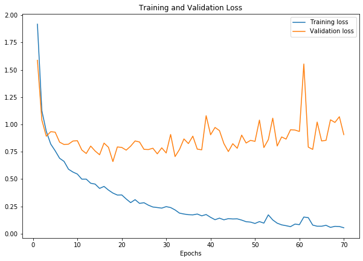
<Figure size 432x288 with 0 Axes>
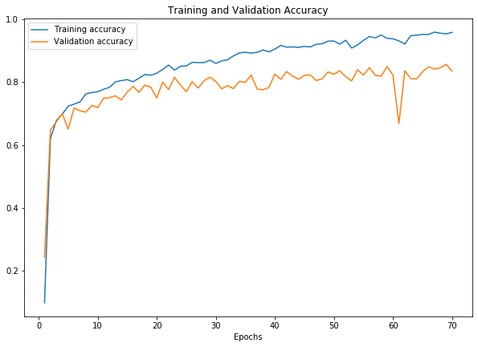
<Figure size 432x288 with 0 Axes>
Test the network on the test data
We have trained the network over the training dataset. But we need to check if the network has learnt anything at all.
We will check this by predicting the class label that the neural network outputs, and checking it against the ground-truth. If the prediction is correct, we add the sample to the list of correct predictions.
Okay, first step. Let us display an image from the test set to get familiar.
fig = plt.figure(figsize=(10, 15))
dataiter = iter(test_data_loader)
images, labels = dataiter.next()
# print images
imshow(torchvision.utils.make_grid(images))
print('GroundTruth: ', ' '.join('%5s, ' % classes[labels[j]] for j in range(len(labels))))
Clipping input data to the valid range for imshow with RGB data ([0..1] for floats or [0..255] for integers).
GroundTruth: melanocytic nevi, melanoma, melanocytic nevi, melanoma, melanoma, melanocytic nevi, melanocytic nevi, benign keratosis-like lesions, basal cell carcinoma, melanocytic nevi,
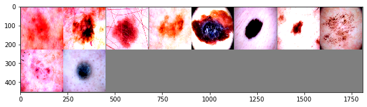
Okay, now let us check the performance on the test network:
correct = 0
total = 0
net.eval()
with torch.no_grad():
for data in test_data_loader:
images, labels = data
images, labels = images.to(device), labels.to(device)
outputs = net(images)
_, predicted = torch.max(outputs.data, 1)
total += labels.size(0)
correct += (predicted == labels).sum().item()
print('Accuracy of the network on the test images: %d %%' % (
100 * correct / total))
Accuracy of the network on the test images: 85 %
class_correct = list(0. for i in range(len(classes)))
class_total = list(1e-7 for i in range(len(classes)))
with torch.no_grad():
for data in test_data_loader:
images, labels = data
images, labels = images.to(device), labels.to(device)
outputs = net(images)
_, predicted = torch.max(outputs, 1)
c = (predicted == labels).squeeze()
for i in range(3):
label = labels[i]
class_correct[label] += c[i].item()
class_total[label] += 1
for i in range(len(classes)):
print('Accuracy of %5s : %2d %%' % (
classes[i], 100 * class_correct[i] / class_total[i]))
Accuracy of actinic keratoses : 92 %
Accuracy of basal cell carcinoma : 96 %
Accuracy of benign keratosis-like lesions : 92 %
Accuracy of dermatofibroma : 79 %
Accuracy of melanoma : 97 %
Accuracy of melanocytic nevi : 85 %
Accuracy of vascular lesions : 0 %
class_correct = list(0. for i in range(len(classes)))
class_total = list(1e-7 for i in range(len(classes)))
net.eval()
with torch.no_grad():
for data in validation_data_loader:
images, labels = data
images, labels = images.to(device), labels.to(device)
outputs = net(images)
_, predicted = torch.max(outputs, 1)
c = (predicted == labels).squeeze()
for i in range(3):
label = labels[i]
class_correct[label] += c[i].item()
class_total[label] += 1
for i in range(len(classes)):
print('Accuracy of %5s : %2d %%' % (
classes[i], 100 * class_correct[i] / class_total[i]))
Accuracy of actinic keratoses : 66 %
Accuracy of basal cell carcinoma : 77 %
Accuracy of benign keratosis-like lesions : 77 %
Accuracy of dermatofibroma : 69 %
Accuracy of melanoma : 79 %
Accuracy of melanocytic nevi : 88 %
Accuracy of vascular lesions : 0 %
Confusion Matrix
confusion_matrix = torch.zeros(len(classes), len(classes))
with torch.no_grad():
for data in test_data_loader:
images, labels = data
images, labels = images.to(device), labels.to(device)
outputs = net(images)
_, predicted = torch.max(outputs, 1)
for t, p in zip(labels.view(-1), predicted.view(-1)):
confusion_matrix[t.long(), p.long()] += 1
print(confusion_matrix)
cm = confusion_matrix.numpy()
tensor([[6.0000e+01, 2.0000e+00, 1.0000e+00, 0.0000e+00, 1.0000e+00, 1.0000e+00,
0.0000e+00],
[0.0000e+00, 1.0200e+02, 0.0000e+00, 1.0000e+00, 0.0000e+00, 0.0000e+00,
0.0000e+00],
[2.0000e+00, 0.0000e+00, 2.0700e+02, 0.0000e+00, 5.0000e+00, 6.0000e+00,
0.0000e+00],
[1.0000e+00, 0.0000e+00, 0.0000e+00, 2.0000e+01, 1.0000e+00, 1.0000e+00,
0.0000e+00],
[0.0000e+00, 1.0000e+00, 1.0000e+00, 0.0000e+00, 2.1400e+02, 7.0000e+00,
0.0000e+00],
[3.0000e+00, 5.0000e+00, 3.8000e+01, 1.0000e+00, 1.7500e+02, 1.1190e+03,
0.0000e+00],
[0.0000e+00, 9.0000e+00, 1.0000e+00, 0.0000e+00, 8.0000e+00, 1.0000e+01,
0.0000e+00]])
fig,ax= plt.subplots(figsize=(7,7))
sns.heatmap(cm / (cm.astype(np.float).sum(axis=1) + 1e-9), annot=False, ax=ax)
# labels, title and ticks
ax.set_xlabel('Predicted', size=25);
ax.set_ylabel('True', size=25);
ax.set_title('Confusion Matrix', size=25);
ax.xaxis.set_ticklabels(['akiec','bcc','bkl','df', 'mel', 'nv','vasc'], size=15); \
ax.yaxis.set_ticklabels(['akiec','bcc','bkl','df','mel','nv','vasc'], size=15);
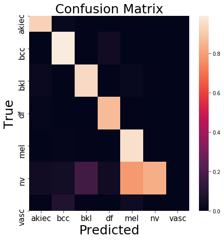
Grad cam
from collections import OrderedDict, Sequence
class _BaseWrapper(object):
"""
Please modify forward() and backward() according to your task.
"""
def __init__(self, model):
super(_BaseWrapper, self).__init__()
self.device = next(model.parameters()).device
self.model = model
self.handlers = [] # a set of hook function handlers
def _encode_one_hot(self, ids):
one_hot = torch.zeros_like(self.logits).to(self.device)
one_hot.scatter_(1, ids, 1.0)
return one_hot
def forward(self, image):
"""
Simple classification
"""
self.model.zero_grad()
self.logits = self.model(image)
self.probs = F.softmax(self.logits, dim=1)
return self.probs.sort(dim=1, descending=True)
def backward(self, ids):
"""
Class-specific backpropagation
Either way works:
1. self.logits.backward(gradient=one_hot, retain_graph=True)
2. (self.logits * one_hot).sum().backward(retain_graph=True)
"""
one_hot = self._encode_one_hot(ids)
self.logits.backward(gradient=one_hot, retain_graph=True)
def generate(self):
raise NotImplementedError
def remove_hook(self):
"""
Remove all the forward/backward hook functions
"""
for handle in self.handlers:
handle.remove()
class GradCAM(_BaseWrapper):
"""
"Grad-CAM: Visual Explanations from Deep Networks via Gradient-based Localization"
https://arxiv.org/pdf/1610.02391.pdf
Look at Figure 2 on page 4
"""
def __init__(self, model, candidate_layers=None):
super(GradCAM, self).__init__(model)
self.fmap_pool = OrderedDict()
self.grad_pool = OrderedDict()
self.candidate_layers = candidate_layers # list
def forward_hook(key):
def forward_hook_(module, input, output):
# Save featuremaps
self.fmap_pool[key] = output.detach()
return forward_hook_
def backward_hook(key):
def backward_hook_(module, grad_in, grad_out):
# Save the gradients correspond to the featuremaps
self.grad_pool[key] = grad_out[0].detach()
return backward_hook_
# If any candidates are not specified, the hook is registered to all the layers.
for name, module in self.model.named_modules():
if self.candidate_layers is None or name in self.candidate_layers:
self.handlers.append(module.register_forward_hook(forward_hook(name)))
self.handlers.append(module.register_backward_hook(backward_hook(name)))
def _find(self, pool, target_layer):
if target_layer in pool.keys():
return pool[target_layer]
else:
raise ValueError("Invalid layer name: {}".format(target_layer))
def _compute_grad_weights(self, grads):
return F.adaptive_avg_pool2d(grads, 1)
def forward(self, image):
self.image_shape = image.shape[2:]
return super(GradCAM, self).forward(image)
def generate(self, target_layer):
fmaps = self._find(self.fmap_pool, target_layer)
grads = self._find(self.grad_pool, target_layer)
weights = self._compute_grad_weights(grads)
gcam = torch.mul(fmaps, weights).sum(dim=1, keepdim=True)
gcam = F.relu(gcam)
gcam = F.interpolate(
gcam, self.image_shape, mode="bilinear", align_corners=False
)
B, C, H, W = gcam.shape
gcam = gcam.view(B, -1)
gcam -= gcam.min(dim=1, keepdim=True)[0]
gcam /= gcam.max(dim=1, keepdim=True)[0]
gcam = gcam.view(B, C, H, W)
return gcam
def demo2(image, label, model):
"""
Generate Grad-CAM
"""
# Model
model = model
model.to(device)
model.eval()
# The layers
target_layers = ["layer4"]
target_class = label
# Images
images = image.unsqueeze(0)
gcam = GradCAM(model=model)
probs, ids = gcam.forward(images)
ids_ = torch.LongTensor([[target_class]] * len(images)).to(device)
gcam.backward(ids=ids_)
for target_layer in target_layers:
print("Generating Grad-CAM @{}".format(target_layer))
# Grad-CAM
regions = gcam.generate(target_layer=target_layer)
for j in range(len(images)):
print(
"\t#{}: {} ({:.5f})".format(
j, classes[target_class], float(probs[ids == target_class])
)
)
gcam=regions[j, 0]
plt.imshow(gcam.cpu())
plt.show()
image, label = next(iter(test_data_loader))
# Load the model
model = net
# Grad cam
demo2(image[0].to(device), label[0].to(device), model)
image = np.transpose(image[0], (1,2,0))
image2 = np.add(np.multiply(image.numpy(), np.array(norm_std)) ,np.array(norm_mean))
print("True Class: ", classes[label[0].cpu()])
plt.imshow(image)
plt.show()
plt.imshow(image2)
plt.show()
Generating Grad-CAM @layer4
#0: melanocytic nevi (0.76489)
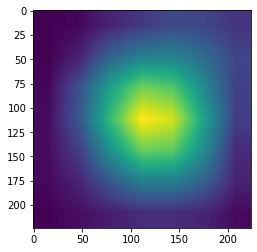
Clipping input data to the valid range for imshow with RGB data ([0..1] for floats or [0..255] for integers).
True Class: melanocytic nevi
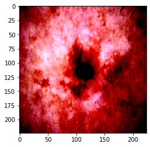
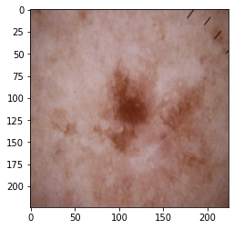
Conclusion
Training a neural network can be a daunting task, especially for a beginner. Here, are some useful practices to get the best out of your network.
- Training Ensembles — Combine learning from multiple networks.
- Always go for a lower learning rate.
- In cases of limited data try better augmentation techniques[20].
- Network architectures that have the appropriate depth for our problem — too many hyperparameters could lead to suboptimal results if we don’t have enough images.
- Improving loss function and class balancing.
In this tutorial we learned how to train a deep neural network for the challenging task of skin-lesion classification. We experimented with two network architectures and provided insights in the attention of the models. Additionally, we achieved 83% overall accuracy on HAM10000 and provided you with more tips and tricks to tackle overfitting and class imbalance.
Now you have all the tools to not only beat our performance and participate in the exciting MICCAI Challenges, but to also solve many more medical imaging problems.
Happy training!